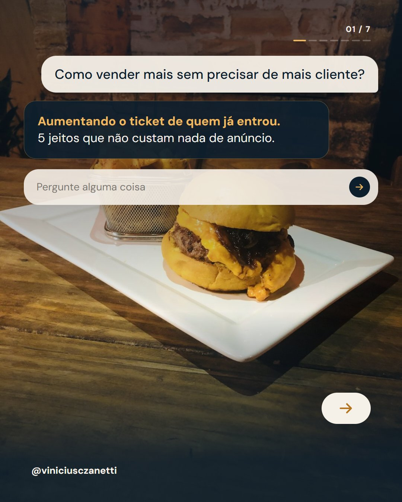

Como aumentar o ticket médio do restaurante sem precisar de mais cliente
Quase todo dono quer mais cliente. Pouca gente olha para quem já está na mesa ou no balcão. Cinco mudanças de atendimento e de cardápio que não custam anúncio, e a conta que mostra o tamanho do ganho.
Publicado em 16/11/2026
Quando o faturamento não cresce, a primeira ideia do dono de hamburgueria ou pizzaria costuma ser trazer mais cliente: anúncio, cupom, influenciador. Para o consultor Vinícius Zanetti, há um caminho mais barato que fica esquecido. Aumentar quanto gasta quem já entrou.
Num exemplo que ele publicou no Instagram, R$ 5 a mais por pedido, num restaurante com 1.500 pedidos no mês, somam R$ 7.500 de faturamento a mais. Sem gastar um real para trazer cliente novo.

"Quase todo dono que eu atendo quer mais cliente. Pouca gente olha pra quem já está sentado na mesa ou já está pedindo no balcão."Vinícius Zanetti, no carrossel sobre o ticket médio
O que é ticket médio e como calcular?
Ticket médio é o valor médio de cada pedido. A conta é o faturamento do período dividido pelo número de pedidos do mesmo período. Vale calcular separado por canal, porque salão, balcão e aplicativo costumam ter tickets bem diferentes.
No capítulo Acompanha do livro Restaurante no Controle, Vinícius explica por que esse número importa: ele responde se o faturamento cresceu porque o restaurante atendeu mais clientes ou porque cada cliente gastou mais. As duas situações têm implicações diferentes para a operação. Mais cliente pede mais equipe, mais entrega, mais insumo. Mais ticket, muitas vezes, só pede uma pergunta bem feita.
Quanto rende aumentar o ticket médio?
| Neste exemplo | Valor |
|---|---|
| Aumento por pedido | R$ 5 |
| Pedidos no mês | 1.500 |
| Faturamento a mais por mês | R$ 7.500 |
O número é de exemplo, e o próprio carrossel pede que cada dono faça a conta com os seus pedidos. Um cuidado: R$ 7.500 é faturamento, não lucro. Do valor a mais ainda saem o custo do que foi vendido e as taxas. Por isso, o item que se oferece precisa ter boa margem de contribuição. A referência da Zatti é de 35% no mínimo, e de 50% a 55% para uma margem considerada boa.
Como aumentar o ticket médio do restaurante?
O carrossel lista cinco jeitos. Nenhum depende de anúncio.
1. Oferecer a bebida antes de o pedido fechar
Cliente a quem ninguém perguntou pede água ou nada. E a pergunta com opção funciona melhor do que a pergunta aberta. Em vez de "vai beber alguma coisa?", o atendente pergunta: "Prefere refrigerante ou suco pra beber?"
2. Trocar o "mais alguma coisa?" por uma oferta com preço
É a mudança mais simples e a que mais aparece nos atendimentos. O carrossel compara duas frases. "Mais alguma coisa?" não vende. "Quer dobrar a carne por mais R$ 8?" vende. Ou ainda: "Na compra da batata, a bebida sai por R$ 1,00. Posso acrescentar no seu pedido?"
"Pergunta aberta leva ao "não". Oferta com preço na frase leva ao "sim"."Vinícius Zanetti, no carrossel sobre o ticket médio
Antes de treinar a equipe numa oferta como a da bebida a R$ 1, o dono confere na ficha técnica se o combo inteiro ainda deixa margem. Oferta que aumenta o ticket e derruba a margem troca um problema por outro.
3. Sobremesa e café na hora certa
A oferta tem hora. Para Vinícius, é quando o prato sai da mesa, e não quando o cliente já está com a conta na mão.
"Depois que pediu a conta, o cliente já foi embora na cabeça."Vinícius Zanetti, no carrossel sobre o ticket médio
4. Um item âncora no topo do cardápio
Segundo o carrossel, um item mais caro no topo do cardápio faz o do meio parecer barato, e o do meio costuma virar o mais pedido. Na prática, o dono escolhe qual lanche quer que seja o mais vendido, de preferência o de melhor margem, e monta a ordem do cardápio em volta dele. Para decidir o que fica e o que sai do cardápio, a conta está na matéria Qual lanche tirar do cardápio.
5. Meta de ticket médio por atendente
O último item é o que faz os outros quatro durarem. Cada atendente tem o seu ticket médio, acompanhado toda semana. Sem número, a oferta é feita na primeira semana e esquecida na segunda.
"Nada disso precisa de cliente novo. Precisa de treino e de alguém acompanhando o número."Vinícius Zanetti, no carrossel sobre o ticket médio
Promoção aumenta o ticket médio?
Nem sempre, e às vezes faz o contrário. No delivery, desconto demais pode atrair o cliente que compra pela oferta e puxar o ticket para baixo. O caso de um cliente da Zatti que reduziu as ofertas e viu o ticket subir está na matéria Cupom no delivery: por que oferta demais derruba o ticket médio. Os cinco jeitos do carrossel vão por outro caminho: em vez de baixar o preço, oferecem mais coisa a quem já decidiu comprar.
O checklist da semana
- Calcule o ticket médio de hoje, por canal e, no salão, por atendente.
- Escolha a bebida e o upgrade da semana e confira a margem de cada um na ficha técnica.
- Escreva as frases que a equipe vai usar, com preço na frase, e treine antes do serviço.
- Combine o momento da sobremesa e do café: quando o prato sai da mesa.
- Revise a ordem do cardápio com o item âncora no topo.
- Acompanhe o número toda semana e mostre para a equipe.
Atenção: os valores do carrossel são exemplo. O ganho real depende do número de pedidos, da margem de cada item oferecido e da disciplina da equipe. Meça o ticket médio antes de começar, para saber se a mudança funcionou.
Perguntas frequentes
Como calcular o ticket médio do restaurante?
Divida o faturamento do período pelo número de pedidos do mesmo período. Faça a conta separada por canal, porque salão, balcão e aplicativo costumam ter tickets diferentes.
Como aumentar o ticket médio sem dar desconto?
Oferecendo mais a quem já está comprando: bebida com opção antes de fechar o pedido, upgrade com preço na frase, sobremesa e café quando o prato sai, item âncora no cardápio e meta de ticket por atendente.
Por que o "mais alguma coisa?" não vende?
Porque é uma pergunta aberta, que leva ao "não". Segundo Vinícius Zanetti, a oferta com produto e preço na frase, como dobrar a carne por mais R$ 8, leva ao "sim".
Aumentar o ticket médio aumenta o lucro?
Só se o item vendido a mais tiver boa margem. O valor extra é faturamento; dele ainda saem custo e taxas. A referência da Zatti é margem de contribuição de 35% no mínimo.
Fontes
- Vinícius Zanetti, no Instagram: carrossel sobre vender mais sem mais cliente (17/10/2026). Os valores de R$ 5, 1.500 pedidos e R$ 7.500 são exemplo.
- Vinícius Zanetti, Restaurante no Controle: Método M.E.G.A. de gestão para restaurantes (2026), capítulo Acompanha.